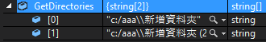
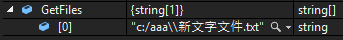
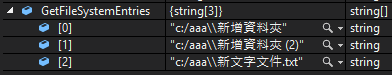

System.IO核心提供了Directory、DirectoryInfo、File、FileInfo、Path類別可用，
其中更關注的是Directory、File、Path靜態類別，
而DirectoryInfo跟Directory的差別是，
DirectoryInfo須建立物件實體來操作，
而Directory是靜態類別則不需建立實體，
File跟FileInfo的關係也相當於Directory跟DirectoryInfo。
一、Directory類別為負責資料夾的新增、修改、刪除、查詢功能
1、新增一目錄：
Directory.CreateDirectory("c:\\aaa");
2、修改目錄名稱
則須利用Directory.Move(sourceDirName,destDirName)
Directory.Move("c:\\aaa", "c:\\bbb");
須注意在Move前目的資料夾不能預先被創立。
雖然Move在字義上為移動，但是其效果就是修改目錄名稱。
3、刪除目錄
Directory.Delete("c:\\bbb");
使用該指令需先注意該目錄為空目錄，否則會出錯，
如果要刪除該目錄底下所有檔案則使用
Directory.Delete("c:\\bbb",true);
4、各種取得資訊方法
(1)、回傳應用程式的絕對路徑
string GetCurrentDirectory = Directory.GetCurrentDirectory();
GetCurrentDirectory字串為C:\Users\tubex\Desktop\Directory的操作\Directory的操作\bin\Debug
(2)、判斷該目錄是否存在
Boolean Exists = Directory.Exists("c:\\aaa");
如果aaa目錄存在則為true
(3)、只列出該目錄底下一層有幾個子目錄
string[] GetDirectories= Directory.GetDirectories("c:\\aaa");

(4)、只列出該目錄底下一層有幾個檔案
string[] GetFiles = Directory.GetFiles("c:\\aaa");

(5)、只列出該目錄底下一層有幾個子目錄與檔案
string[] GetFileSystemEntries = Directory.GetFileSystemEntries("c:\\aaa");

二、File類別也是負責新增、修改、刪除、查詢功能
1、新增檔案
File.Create("c:\\aaa\\aaa.txt");
此指令會創立一個空白文檔
記得要Dispose
File.Create("c:\\aaa\\aaa.txt").Dispose();
2、修改檔案
File.Move("c:\\aaa\\aaa.txt", "c:\\bbb\\bbb.txt");
將aaa.txt檔案搬到bbb資料夾，並且改成bbb.txt檔名。
注意：目的資料夾在Move前必須已存在。
3、刪除檔案
File.Delete("c:\\aaa\\aaa.txt");
此指令會刪除一檔案
4、各種取得資訊方法
(1)、判斷檔案是否存在
Boolean Exists = File.Exists("c:\\aaa\\aaa.txt");
如果該檔案存在則為true。
5、其他功能
(1)、CreateText
Dim f As New FileInfo("c:\StreamWriter2.txt") Dim sw2 As StreamWriter = f.CreateText '如果檔案已存在，則新寫入資料會覆蓋原有的資料 sw2.WriteLine("StreamWrite資料寫入方法二") sw2.Close()
(2)、WriteAllText
File.WriteAllText(@"d:\StreamWriter3.txt", "StreamWrite資料寫入方法四");
(3)、ReadAllLine
//2.1使用File讀整個檔案，每行塞入字串陣列
string[] sStrings = File.ReadAllLines(@"c:\system_io_test\aaa.txt");
如AppendText、Copy、Open、OpenRead、OpenText、OpenWirte、
ReadLines、ReadAllText、Replace、WriteLines...等等。
6、VB.NET範例程式碼僅供參考
Imports System.IOPublic Class Form1
Private Sub Form1_Load(sender As Object, e As EventArgs) Handles MyBase.Load
Dim file As New FileInfo("C:\dir\新增資料夾\新文字文件.txt")
MsgBox("Directory " & file.Directory.ToString)
MsgBox("DirectoryName " & file.DirectoryName)
MsgBox("FullName " & file.FullName)
MsgBox("Extension " & file.Extension)
MsgBox("Name " & file.Name)
End Sub
End Class
三、Path
1、ChangeExtension
string ChangeExtension = Path.ChangeExtension("c:\\aaa\\aaa.txt",".doc");
此功能為把該路徑的附檔名改成doc檔，所以回傳字串為c:\\aaa\\aaa.doc
注意：Path類別只是在操作字串而已，並不會真的去改到實際檔名。
2、Combine
string Combine = Path.Combine("C:\\aaa", "bbb.txt");
則輸出字串為C:\aaa\bbb.txt，combine會幫你在兩字串間加上反斜線「\」
3、GetDirectoryName
string GetDirectoryName = Path.GetDirectoryName("c:\\aaa\\aaa.txt");
取得該位置上層絕對路徑，回傳字串為c:\aaa
4、其他
GetExtention傳回指定路徑字串的副檔名
GetFileName傳回指定路徑字串的檔案名稱和副檔名
GetFileNameWithoutExtension傳回沒有副檔名的指定路徑字串的檔案名稱
GetFullPath傳回指定路徑字串的絕對路徑
HasExtension判斷路徑是否包括副檔名
參考資料：